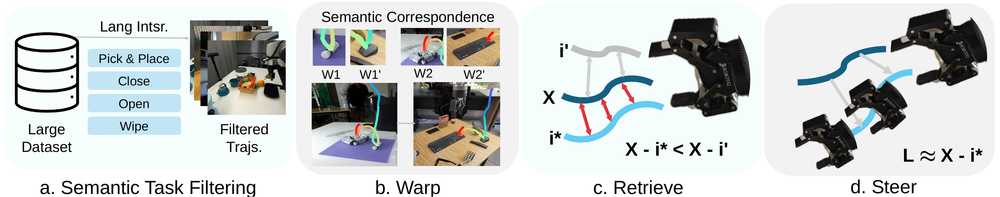
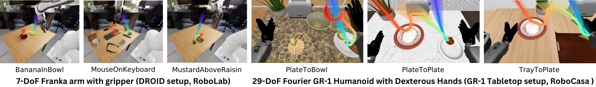
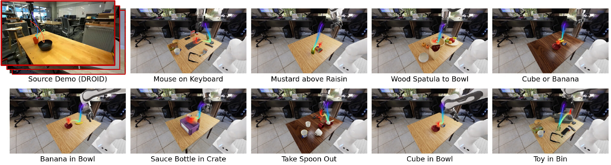
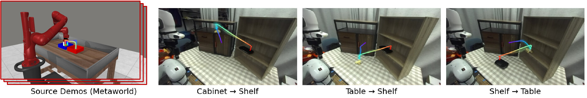
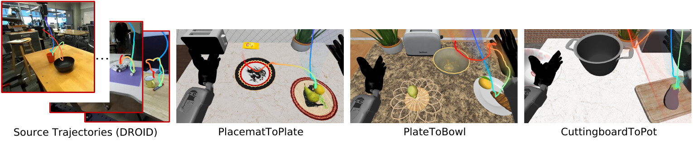
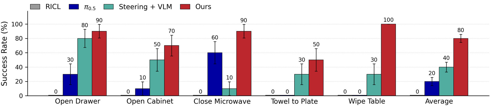
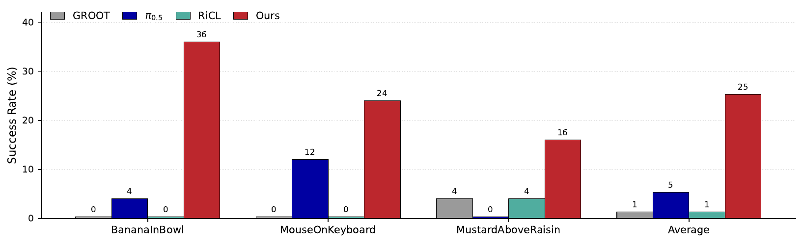

Pre-training large parametric “Vision-Language-Action” (VLA) models on large demonstration datasets has recently produced promising results for general-purpose manipulation, yet these models still struggle under even small domain shifts from training data, such as the camera viewpoint, the scene background, the exact object identities, or the robot’s precise morphology. What makes this especially frustrating is that any trained roboticist knows appropriate compensation mechanisms for many of these shifts: e.g., correctly accounting for camera-robot calibration to overcome camera viewpoint shift, or attending to the key task-relevant entities to avoid distraction by background shift.
We propose Retrieval-Augmented Guidance (RAGu), which non-parametrically injects this knowledge into a target VLA to robustify it against such domain shifts, without modifying the VLA’s weights. To enable near-real-time retrieval-augmentation for VLAs, we design a process that constructs trajectory guidance through a multi-stage coarse-to-fine retrieval operation that iteratively filters the source dataset based first on the target task category, then the target scene, and finally the VLA intent at the current moment in time. Thus only the last, finest stage needs to be performed in the closed control loop during task execution, yielding large computational efficiencies.
We show that RAGu’s explicit visual knowledge injection helps base VLAs overcome domain shifts while preserving their motor priors. Across five real-world tasks and nine simulated RoboLab tasks, RAGu reaches 80% average success in the real world and 34.4% average success in simulation, consistently outperforming base VLA policies, inference-time steering baselines, and retrieval-based adaptation methods.
Implementing retrieval-augmented generation for robotics must overcome three key problems: (1) Retrieval scalability — full retrieval from a large database inside the closed control loop is too computationally expensive; (2) Cross-domain generalization — even the best-matched trajectories in the largest robotics datasets are still domain-shifted in viewpoint, scene geometry, and embodiment; and (3) Context-efficient adaptation — VLAs are often too small to concatenate retrieved examples into their input context. RAGu addresses all three with a coarse-to-fine warp → retrieve → steer pipeline that turns cross-domain demonstrations into an inference-time guidance field for a frozen flow-matching VLA.

Overview of the RAGu pipeline. Step 1. Cross-domain source trajectories, after task-category filtering, are warped into the novel target domain to bridge spatial gaps via dense semantic correspondences established with object bounding boxes from Grounding DINO. Step 2. RAGu retrieves the optimal prior-aligned trajectory i* from the top-K candidates by minimizing the guidance gradient norm, ensuring natural alignment with the VLA’s generative prior. The selected trajectory acts as an energy guidance field Lwarp that dynamically steers the VLA’s flow-matching denoising process vguided at test time, achieving zero-shot out-of-distribution adaptation.
Large unstructured datasets (e.g., DROID) or simulation benchmarks (e.g., Meta-World) are first filtered into a ~100-trajectory pool using semantic keywords for broad task dynamics such as pick-and-place, wiping, or closing — ensuring structural compatibility with the target task before any expensive computation.
Because cross-domain scenes rarely share object instances, strict in-domain visual matching is replaced with semantic bounding boxes for task-relevant entities (via Grounding DINO), localizing target waypoints in the new scene. Each source trajectory’s 3D waypoints are then warped into the target geometry. Crucially, warped paths are used only as spatial priors — the VLA’s innate generalization manages the closed-loop manipulation, avoiding the unreliability of directly executing warped paths with inverse kinematics.
Coarse (static): for each task-dynamics group, a reference trajectory that is geometrically relevant and compatible with the VLA prior anchors a Dynamic Time Warping (DTW) pruning step, keeping only the top-K warped candidates (e.g., K=8 for real-robot, K=16 for RoboLab, K=3 for the humanoid). Fine (inference-time): in the control loop, the VLA’s predicted action chunk is mapped to a Cartesian end-effector path via forward kinematics, and RAGu selects the candidate whose tracking-cost gradient has the smallest norm — the trajectory requiring the least change to the VLA’s current dynamics, hence closest to the policy’s own intent. Only this fine stage runs in the loop, once per inference at the first denoising step.
The selected warped trajectory instantiates an energy function whose gradient is subtracted from the flow-matching velocity field (vguided = v − γ∇Lwarp), steering action generation toward the retrieved trajectory while the VLA’s weights stay frozen and its motor priors stay intact.
The clips below show the RAGu pipeline on the real robot. RAGu draws on many cross-domain source demonstrations from DROID (left; the rainbow curve traces each demo’s 3D end-effector trajectory, yellow marks the gripper) — different tables, objects, cameras, and backgrounds. All of their trajectories are warped into the target scene via semantic correspondences (right; one warped candidate shown from two camera views). At run time, RAGu retrieves the warped candidate best aligned with the VLA’s current intent and uses it to steer the frozen π0.5 policy in the real world (bottom).
Six of the ~100 pick-and-place source demonstrations used by RAGu. The reference trajectory anchors DTW pruning: selected candidates are retained in the top-K pool and warped into the target scene (right), while discarded ones are pruned.
At the first denoising step of each inference, RAGu retrieves the warped candidate whose guidance gradient is smallest — the one closest to the policy’s own intent — and steers the denoising toward it. The strip shows the actual robot execution from multiple cameras.
Because warped 3D trajectories abstract away appearance, viewpoint, and embodiment, the same retrieval-augmented guidance transfers across radically different source–target pairs.

Real-to-Sim cross-embodiment warping. Real-world DROID demonstrations provide structural priors in simulated environments — from the 7-DoF Franka in RoboLab (left) to the 29-DoF Fourier GR-1 humanoid with dexterous hands in RoboCasa (right). The background streams show the distribution of candidates retrieved via coarse DTW filtering.

RoboLab environment overview. 100 real-world source trajectories are queried from DROID (left) and warped into nine simulated RoboLab tasks. The transparent streams visualize the spatial diversity of the warped candidate trajectories; RAGu’s in-the-loop retrieval picks whichever candidate best matches the policy’s intent at each moment.
Successful guided rollouts on RoboLab tasks, shown from all three camera views. The cyan curve overlaid on each frame is the retrieved warped DROID trajectory steering the frozen π0.5 policy. Longer episodes are sped up for brevity.

Cross-embodiment sim-to-real warping. 100 simulated expert trajectories from a Meta-World Sawyer robot (bin-picking-v3) are warped into the physical DROID setup for the multi-stage Banana-to-Plate task across three origin–destination layouts, exploiting free simulation data for robust real-world adaptation.

Franka → humanoid guidance. End-effector trajectories from the Franka-based DROID dataset guide GR00T-N1.5 policies on the Fourier GR-1 humanoid tabletop tasks — despite entirely different kinematics, grippers, and camera setups.
Successful zero-shot rollouts on the 29-DoF Fourier GR-1 humanoid in RoboCasa: the frozen GR00T-N1.5 policy is guided by K=3 warped Franka demonstrations from DROID. Shown at 3× speed.

Real-world success rates (10 rollouts per task). RAGu doubles the inference-time steering baseline (Steering + VLM) and quadruples the base π0.5 policy on average, reaching 100% on Wipe Table and 90% on Open Drawer and Close Microwave. The retrieval-augmented fine-tuning baseline RiCL fails to complete any task in this setting.

RoboLab evaluation (25 rollouts per task). With an identical pool of 100 warped DROID demonstrations, RAGu (25% avg.) substantially outperforms RiCL (1%), base π0.5 (5%), and GROOT (1%) — evidence that trajectory-aligned, prior-aware steering is a more context-efficient adaptation mechanism than concatenating demonstrations into the context or updating the VLA’s weights.
Real-robot rollouts across five manipulation tasks. All 200 episodes (4 methods, 5 tasks, 10 episodes each) with action histories are uploaded to the referenced dataset — except one success episode of the Steering + VLM baseline on the Towel on Plate task, whose video was accidentally not saved. For each task we show representative success and failure episodes for our method (Ours) and two baselines (Steering + VLM, RiCL).
RAGu is a zero-shot, training-free framework that adapts pretrained VLAs to out-of-distribution environments by semantically warping cross-domain trajectories into the target geometric space and using them as energy fields that guide the flow-matching denoising process. It bridges embodiment and sim-to-real gaps — enabling a Franka manipulator to execute complex multi-stage tasks from simulated Sawyer demonstrations — and scaling the retrieval pool to 100 trajectories significantly improves robustness. Limitations: RAGu relies on visual semantic correspondences and is therefore sensitive to camera placement and occlusion; severe occlusions, including self-occlusion by the robot, can degrade 3D warping and inject noise into the guidance. Future work will incorporate more robust multi-view 3D representations. Overall, RAGu offers a scalable and computationally efficient path to deploy foundation robot models in the wild without costly fine-tuning.